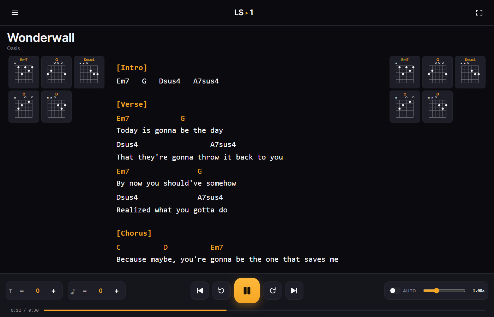
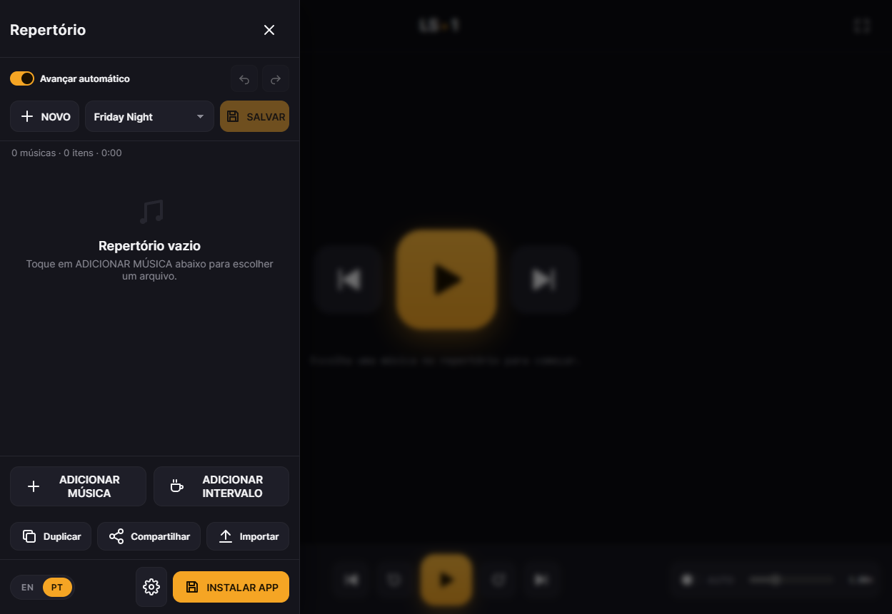
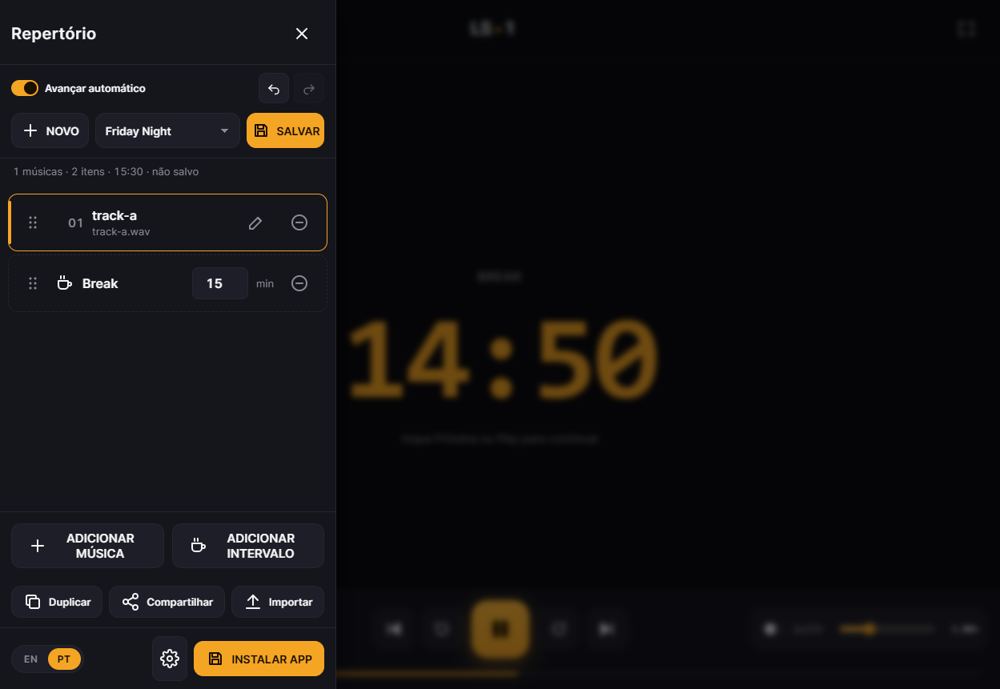
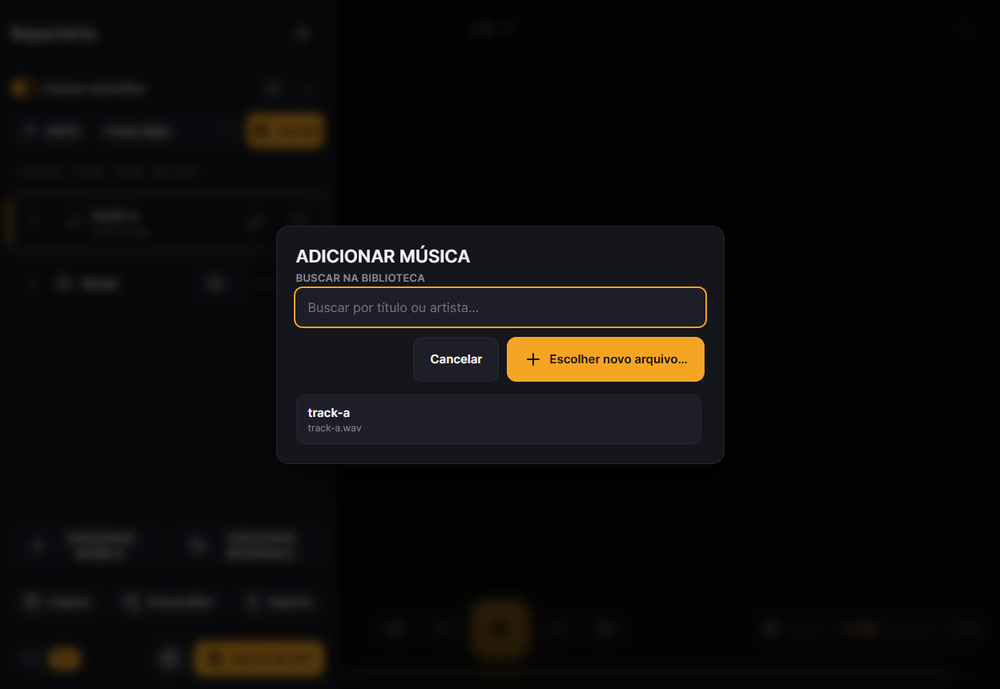

Chords, lyrics, and playback that never stops mid-song — a local-first PWA with no login, no cloud, and no subscription.




Auto-scroll, transpose, chord diagrams on both rails, adjustable font size for stage lighting.
Reorder, add, remove, or edit a cifra mid-song. Playback is fully decoupled from the set list.
A centered mm:ss timer for sound-check and set-changeover, right on the performance screen.
Ctrl+Z reverses the last add, remove, or reorder — built for tablets and fat fingers.
A real PWA tuned for phones, tablets, and desktop. Keeps working with no signal in the venue.
Full bilingual UI, plus one-click Cifra Club import and clipboard-paste cleanup.
No account, no upload, no server round-trip to play a song. LiveSet reads files straight from your device and remembers them locally — nothing leaves your phone or laptop.